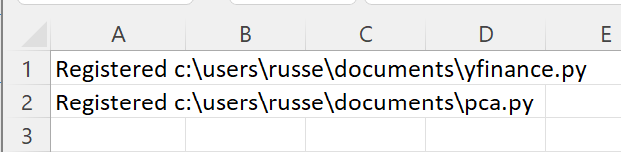
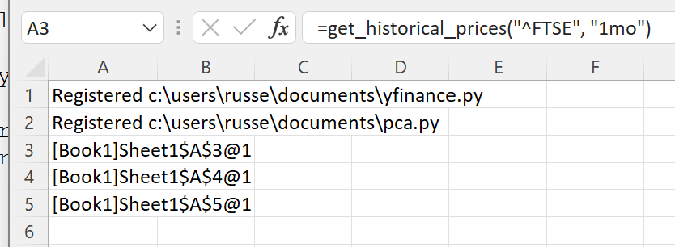

Principal Components Analysis of Index Prices¶
This example builds on Loading Stock Prices from Yahoo! Finance, using the Python sklearn package to perform PCA on the downloaded prices.
Warning
The numpy functionality shown requires a premium licence. See Licensing
We will use this Python code to perform the PCA.
# example of performing pca on historical prices of indices
from typing import List, Optional
import pandas as pd
import numpy as np
from sklearn.preprocessing import StandardScaler
from sklearn.decomposition import PCA
def pca(prices: List[pd.DataFrame], num_comp: Optional[int] = -1) -> np.ndarray:
"""
prices: list of pandas dataframes extracted using yfinance historical data prices (assumes prices are for the same dates)
num_comp: int number of components to keep, if -1 then all components are kept
"""
# extract the data for close of day prices
# calculate pct change
assert len(prices) > 0, "prices should have at least one dataframe"
df_close = pd.DataFrame()
for i in range(len(prices)):
df_close["stock_" + str(i + 1)] = prices[0]["Close"].pct_change().fillna(0)
if num_comp == -1:
pca = PCA(random_state=11)
else:
pca = PCA(n_components=num_comp, random_state=11)
df_close_scaled = StandardScaler().fit_transform(df_close)
pca.fit(df_close_scaled)
return pca.transform(df_close_scaled)
Note
All the Python code and Excel files shown are available from github in the xlslim-code-samples repo.
Save the Python code as a new file on your PC. I saved the file in my Documents folder.
Enter these two RegisterPyModule() formulae (amending the location to match where you saved the files):
=RegisterPyModule("c:\users\russe\documents\yfinance.py","C:\Users\russe\anaconda3\envs\py37")
=RegisterPyModule("c:\users\russe\documents\pca.py","C:\Users\russe\anaconda3\envs\py37")
Note
sklearn is not available in the Python installation bundled with xlSlim. The Python module must be registered with an existing Python installation that has sklearn installed. See sklearn for installation details.
You should see a message similar to this confirming the module registrations:
{kind=link}
The get_historical_prices() and pca() functions are now available in Excel.
Let’s load the last month of prices for the FTSE 100, FTSE MIB and AEX indices (UK, Italian and Dutch indices):
=get_historical_prices("^FTSE", "1mo")
=get_historical_prices("FTSEMIB.MI", "1mo")
=get_historical_prices("^AEX", "1mo")
A cache object handle is returned to Excel for each pandas DataFrame of index prices. Internally xlSlim has put the pandas DataFrames into an in-memory cache.
{kind=link}
Now we pass the prices into the PCA function:
=pca(A3:A5)
Another cache object handle is returned with the PCA results. The results can be viewed with ViewPyObject():
=ViewPyObject(A6)
{kind=link}
This example shows how neatly xlSlim handles both pandas DataFrames and numpy arrays.